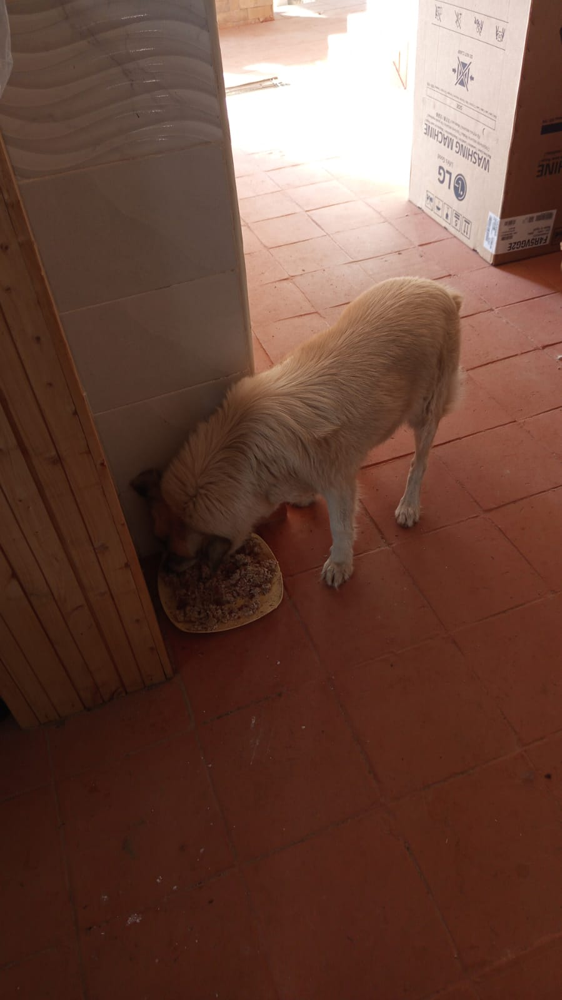

Mucheru World of Golf
Heavy engineering and course agronomy advanced across multiple fairways at Mucheru World of Golf on Wednesday, 14th October 2026. Peter Githinji was present on site actively overseeing machine operations and drainage installations alongside site supervisors Mr. Gichuhi and Ken:
Golf Course Operational Highlights
The Backhoe Loader continued excavating the primary collector drainage canal where all green outlets discharge. Riversand spreading and leveling was completed across all treated greens, with Green 16 fully leveled and Green 18 underway. Teebox 1 reached finished elevation and grading, while Teebox 2 refinement started. Perimeter irrigation trenches were excavated on Greens 18, 1, 2, 3, and 4.
- Main Collector Drainage Trench Excavation: The Backhoe Loader (JCB KHMA 399H from Peter Githinji's team) continued continuous deep excavation of the larger main drainage trench system. This channel serves as the central artery where all individual green drainage outlets will discharge excess runoff toward the course reservoirs.
- Agronomic Riversand Spreading & Leveling: Spreading and precision surface leveling of river sand was completed across all greens where sand was applied. Green 16 was fully completed over its pumice foundation bed, and sand application progressed across the playing surface of Green 18.
- Teebox 1 Refinement & Teebox 2 Commencement: Ground teams fully refined, contoured, and graded Teebox 1 platform to finished design elevation. Earthwork shaping and surface refinement were actively initiated on Teebox 2, incorporating red loam soil and stone aggregate.
- Irrigation & Pop-up Sprinkler Trenches Dug: Trenching crews dug perimeter trenches marked out with chalk for the automated irrigation lines and pop-up sprinklers across Greens 18, 1, 2, 3, and 4.
- Greens Drainage Outlet Leveling & PVC Installation: Labor teams leveled drainage trench beds and connected orange PVC pipes, positioning them into the graded trenches to convey sub-surface drainage away from the green foundations.
- Dam Water Inlet Operations: Excavation and inlet works at Dam 3 continued steadily. Water inlet operations at Dam 1 and Dam 2 were temporarily paused to perform maintenance and repair work on the polythene geomembrane liner connections.
- On-Site Supervision & Engineering Coordination: Peter Githinji was on site providing hands-on operational leadership alongside Mr. Gichuhi and Ken, ensuring strict compliance with course design gradients.
18-hole putting green status audit showing the latest work completed and current condition for each green as of October 14, 2026:
| Green | Current Technical & Agronomic State | Milestone Status |
|---|---|---|
| Green 1 Today | Pop-up sprinkler and irrigation perimeter trenches dug along marked chalk line (Oct 14). | Sprinkler Trenches Dug |
| Green 2 Today | Pop-up sprinkler and irrigation perimeter trenches dug along marked chalk line (Oct 14). | Sprinkler Trenches Dug |
| Green 3 Today | Pop-up sprinkler and irrigation perimeter trenches dug along marked chalk line (Oct 14). | Sprinkler Trenches Dug |
| Green 4 Today | Pop-up sprinkler and irrigation perimeter trenches dug along marked chalk line (Oct 14). | Sprinkler Trenches Dug |
| Green 5 | Connected PVC pipes to green outlet drainage trench for excess runoff and sprinkler lines (Oct 9). | Drainage PVC Connected |
| Green 6 | Surplus red soil spread around outer surrounds and leveled (Oct 12). | Surplus Red Soil Leveled |
| Green 7 Today | Pop-up sprinkler and drainage perimeter trench dug along marked collar line (Oct 14). | Sprinkler Trench Dug |
| Green 8 | Riversand spread and leveled over pumice bed; surplus red soil leveled along surrounds; pop-up sprinklers measured and marked (Oct 11). | Riversand Leveled |
| Green 9 | Riversand spread and leveled over pumice bed; surplus red soil leveled along surrounds; pop-up sprinklers measured and marked (Oct 11). | Riversand Leveled |
| Green 10 | Surplus red soil spread around collar and outer surrounds and leveled (Oct 12). | Surplus Red Soil Leveled |
| Green 11 | Drainage PVC pipes installed in leveled trenches; riversand spread and leveled over pumice bed (Oct 13). | Riversand • PVC In |
| Green 12 | Surplus red soil applied and leveled around collar and surrounds (Oct 2); pop-up sprinklers measured and marked (Oct 11). | Surplus Red Soil Applied |
| Green 13 | Drainage PVC pipes installed; irrigation trench lines and pop-up locations marked with lime (Oct 13). | PVC Installed • Marked |
| Green 14 | Surplus red soil spread around collar and outer surrounds and leveled (Oct 12). | Surplus Red Soil Leveled |
| Green 15 | Surplus red soil spread around outer surrounds and leveled (Oct 12). | Surplus Red Soil Leveled |
| Green 16 Today | Riversand spreading and precision leveling completely finished over pumice bed across green surface (Oct 14). | Riversand Leveled |
| Green 17 | Drainage PVC pipes installed and aligned in leveled trenches (Oct 13). | Drainage PVC Installed |
| Green 18 Today | Pop-up sprinkler trenches dug; riversand applied and leveled across green surface (Oct 14). | Riversand • Sprinkler Trench |
Comprehensive 18-hole championship teebox platform audit tracking earthwork leveling, structural embankments, and playing corridor alignments as of October 14, 2026:
| Teebox | Current Technical & Earthwork State | Platform Status |
|---|---|---|
| Tee 1 Today | Playing launch platform fully refined, contoured, and graded to final design elevation (Oct 14). | Refined & Graded |
| Tee 2 Today | Platform earthwork shaping and surface refinement actively started and in progress (Oct 14). | Refinement in Progress |
| Tee 3 | Playing launch platform completely reshaped, contoured, and graded using Backhoe Loader (Sep 24); received 1 lorry red soil delivery (Sep 26). | Platform Reshaped |
| Tee 4 | Championship launch platform completely reshaped, cut, and graded using Backhoe Loader (Sep 23); received 1 lorry red soil delivery (Sep 26). | Platform Reshaped |
| Tee 5 | Main perimeter drainage pipeline backfilled all the way past Maina's place (Oct 2). | Drainage Backfilled |
| Tee 6 | Precision leveling and compaction completed; fresh delivery of 1 lorry red loam topsoil unloaded at platform surrounds (Sep 26). | Red Soil In • Leveled |
| Tee 7 | Both number 7 teebox platforms actively reshaped, cut, and leveled by crew under Joe Kamau and supervisors (Oct 4). | Both Platforms Reshaped |
| Tee 8 | Graded, leveled, and contour-adjusted; fresh delivery of 1 lorry red loam topsoil unloaded directly on platform (Sep 26). | Red Soil In • Graded |
| Tee 9 | Playing platform leveled and surrounding perimeter ground graded (Sep 1); received 1 lorry red soil delivery (Sep 26). | Platform Leveled |
| Tee 10 | Playing launch platform shaping and surface refinement completely finished (Oct 13). | Platform Refined |
| Tee 11 | Playing launch platform grading and contour refinement completely finished (Oct 13). | Refinement Complete |
| Tee 12 | Both championship and forward platforms actively shaped, leveled, and refined to finished design elevation (Oct 8). | Shaped & Refined |
| Tee 13 | Playing platform earthworks completely finished, shaped, and refined to final design elevation and contours (Oct 7). | Finished & Refined |
| Tee 14 | Launch platform earthworks completely finished, shaped, and refined to final playing contour (Oct 7). | Finished & Refined |
| Tee 15 | Launch platform shaping completely finished; terrace cut to design elevation and precision leveled (Oct 6). | Platform Reshaped |
| Tee 16 | Surplus red soil moved onto platform; launch terrace completely reshaped and leveled (Oct 5). | Platform Reshaped |
| Tee 17 | Launch platform reshaped, cleared of brush, and graded to playing corridor alignment (Oct 6). | Platform Reshaped |
| Tee 18 | Championship tee platform leveled; perimeter approach cleared and graded (Sep 1); received 1 lorry red soil delivery (Sep 26). | Platform Leveled |
Operations Agronomy & Engineering Synthesis
Putting Greens & Hydraulic Milestones: 100% of all greens have completed surplus red soil leveling across the course; riversand spreading and leveling completed on all applied greens (Green 16 finished today, Green 18 underway); pop-up sprinkler and irrigation perimeter trenches excavated on Greens 18, 1, 2, 3, 4, and 7; Backhoe Loader advancing excavation of the main continuous greens drainage collector trench; orange PVC pipe joining and trench placement ongoing; Dam 3 inlet progressing; Dam 1 and 2 inlet paused for polythene liner repairs.
Championship Teebox Platforms: 100% of teebox platforms leveled or refined; Teebox 1 fully refined and graded today; Teebox 2 platform refinement actively started; playing corridors aligning smoothly across the course layout.
Comprehensive video field documentation capturing heavy machinery drainage excavation by the Backhoe Loader, manual leveling of drainage pipe trenches, riversand spreading on green beds, chalk-marked irrigation trenching, and teebox platform grading across Mucheru World of Golf on Wednesday, 14th October 2026.
Photographic field documentation capturing collector canal excavation, PVC pipe laying, teebox refinement, agronomic riversand spreading, and perimeter sprinkler trenching across Mucheru World of Golf:

Aerial View: Backhoe Loader Digging Collector Drainage Canal
Aerial perspective of the yellow JCB Backhoe Loader actively cutting the deep main drainage canal between putting greens across the fairway.

Ground Profile of Continuous Main Drainage Trench
View down the freshly excavated main trench corridor, showing trench depth and alignment with the Backhoe Loader operating in the distance.

Backhoe Loader Excavator Bucket Trenching
Close-up view of the rear excavator boom digging deep into the soil profile to maintain proper drainage discharge gradients.

Aerial View: Intersecting Drainage Network and Dam Basin
Overhead view showing the deep collector drainage trench routing runoff directly toward the reservoir basin and connecting lateral branches.

Aerial View: Converging Green Drainage PVC Outlets
Aerial perspective showing multiple runs of orange PVC drainage pipe converging at the green outlet trench to convey excess sub-surface runoff.

Ground Crew Connecting PVC Drainage Lines
Field crew assembling, aligning, and jointing orange PVC pipes inside the leveled trench ditch under supervisor Mr. Gichuhi and Peter Githinji.

Continuous Run of Orange PVC Drainage Pipe
Straight run of connected PVC drainage pipeline seated securely along the manually graded trench bed toward the main collector canal.

Laborer Grading Trench Bed Near Green Collar
Worker inside the deep trench clearing loose soil to ensure positive slope before seating the connecting PVC discharge pipe.

Initial Riversand Spreading on Green 16
Crew using hand rakes to evenly distribute golden river sand piles over the black pumice sub-base foundation on Green 16.

Riversand Layer Leveled Across Green 16 Bed
Worker raking the finished sand profile to uniform depth within the demarcated white chalk collar line and red soil surround.

Full Riversand Leveling Completed on Green 16
Wide perspective showing Green 16 completely covered with smooth, leveled river sand ready for future sprigging and turf establishment.

Aerial View: Green 16 with Leveled Riversand
Drone photograph showing the hourglass shape of Green 16 with the riversand bed nearly complete, framed by red soil collars.

Aerial View: Riversand Progress on Green 18
Overhead view of Green 18 adjacent to Dam 1, showing half of the surface covered in smooth river sand and the remaining pumice bed.

Perimeter Sprinkler Trench Dug on Green 2
Continuous trench excavated along the outer red soil surround following chalk markings to accommodate irrigation pipe and pop-up sprinklers.

Aerial View: Green 2 Leveled Sand & Sprinkler Trench
Drone capture showing Green 2 with perfectly leveled river sand in the interior and the full circular irrigation trench opened along the surround.

Aerial View: Green 7 Irrigation & Drainage Trenching
Overhead shot of Green 7 displaying the uniform sand bed, white chalk demarcations, and perimeter trenching connecting to the drainage corridor.

Completed Perimeter Irrigation Trench Around Green Collar
Evenly excavated ditch tracing the outer boundary of the green surround at dusk, prepared for PVC pipe and sprinkler assembly.

Manual Trench Digging Along Chalk Markings
Laborer using a spade to dig the irrigation pipe trench through red soil along the chalk boundary next to the liner edge.

Teebox Platform Grading and Refinement
Ground crew utilizing shovels and wheelbarrows to move red soil and refine the surface elevation of the teebox platform.

Commencing Earthwork Refinement on Teebox 2
Workers spreading soil and shaping the playing corridor platform on Teebox 2, incorporating red loam and ballast foundation material.

Aerial View: Teebox 2 Platform Refinement Underway
Drone perspective showing the labor team actively contouring and leveling the elevated Teebox 2 launch platform adjacent to the fairway.
Chaka Farms
Farm operations at Chaka Farms on Wednesday, 14th October 2026 maintained strict production reconciliation, timely livestock veterinary care, estate groundskeeping, and disciplined canine manners training:
Farm Operational Highlights
Daily dairy harvest achieved 7.0 Litres gross production with 6.0 Litres dispatched for commercial sale and 1.0 Litre in routine farm allocations, maintaining 100% accounting reconciliation strictly in Litres. A veterinary doctor examined and treated two sick goat kids, compound lawns were mowed, grass was planted along the office walkway, and estate grounds were kept clean.
- Reconciled Dairy Production: The dairy unit recorded a total gross milk yield of 7.0 Litres (4.5L morning session + 2.5L evening session). Commercial sales totaled 6.0 Litres (3.5L morning + 2.5L evening). Routine internal farm disbursements accounted for 1.0 Litre (0.5L Gladys staff ration + 0.5L Maasai), ensuring 100% reconciliation in Litres with zero discrepancy.
- Prompt Veterinary Treatment for Sick Kids: Following an initial sick goat kid reported previously, a second goat kid fell ill today, bringing the total to two sick kids. A qualified veterinary doctor arrived on site today, performed thorough clinical examinations, and administered appropriate medical treatment to restore the kids to health.
- Main Compound Lawn Mowing: Grounds teams deployed motorized brush cutters across the expansive main compound, mowing the turf under the acacia grove to maintain clean estate aesthetics.
- Grass Planting Near Farm Office: Margaret and Monica prepped and planted fresh grass stolons along the perimeter of the paved slab walkway leading to the farm office to enhance groundcover.
- Compound Cleanliness & Fallen Branch Clearance: Margaret and Monica swept estate grounds and collected fallen tree branches and debris across the lawn, loading them into wheelbarrows for disposal.
- Structured Canine Manners Training: Willy directed daily canine unit routines, including kennel sanitation, obedience manners practice ("paw" command and "spine" command), and afternoon walking for all dogs. Morning socialization was successfully conducted for Bella, Coby, and Logan.
Official quantitative dairy milking harvest and sales ledger for Wednesday, 14th October 2026, recording gross yields, commercial dispatches, and internal farm disbursements strictly in Litres:
| Category / Transaction | Morning Session | Evening Session | Daily Total |
|---|---|---|---|
| Gross Milk Harvested | 4.5 Litres | 2.5 Litres | 7.0 Litres |
| Commercial Milk Sales (Dispatched) | 3.5 Litres | 2.5 Litres | 6.0 Litres |
| Internal Farm Allocation — Gladys (Staff) | 0.5 Litres | — | 0.5 Litres |
| Internal Farm Allocation — Maasai | 0.5 Litres | — | 0.5 Litres |
| Internal Farm Allocation — Goat Kids (Weaned) | 0.0 Litres | 0.0 Litres | 0.0 Litres |
| Total Volume Accounted For | 4.5 Litres | 2.5 Litres | 7.0 Litres (100% Reconciled) |
Dairy Accounting & Veterinary Note
Total gross milk harvested of 7.0 Litres is fully accounted for by 6.0 Litres sold commercially and 1.0 Litre in routine farm allocations (0.5L Gladys + 0.5L Maasai). All milk figures are recorded strictly in Litres. Both sick goat kids received professional veterinary medication today and are isolated in dry, clean stalls for recovery.
Field video recording documenting the Chaka Farms canine unit kennel manners training session overseen by Willy, highlighting obedience commands, structured stall manners, and calm canine behavior.
Photographic field documentation capturing grounds maintenance, lawn trimming, and grass sprig planting at Chaka Farms:

Clearing Fallen Tree Branches on Compound Lawn
Margaret and Monica collecting dry fallen branches and brush from under the trees into a wheelbarrow to keep the grounds pristine.

Planting Grass Along Paved Office Walkway
Staff members preparing grass runners and stolons to plant along the newly graded soil border adjacent to the concrete slab pathway.

Mowing Main Compound Lawn with Brush Cutters
Grounds personnel operating motorized grass trimmers across the spacious acacia parkland lawn, creating an even turf height.

Servicing Grass Trimmer on Compound Grounds
Operator kneeling on the lawn inspecting and tuning the cutting attachment of the brush cutter during mowing operations.
Kabete Residence
Operations at Kabete Residence were overseen and shared by Njoki on Wednesday, 14th October 2026, advancing critical structural concrete pours, formwork installation, wall water curing, and domestic pet welfare:
Structural Engineering Progress
Masons advanced concrete placement and shuttering for vertical column bars and horizontal capping beams along the forest river retaining wall, while continuous water curing was maintained across stone masonry walls at the SQ fireplace structure.
- Forest River Retaining Wall Column Concrete Works: Structural teams placed concrete mix into vertical column rebar cages encased in timber formwork, consolidating the structural pillars of the river retaining wall.
- Retaining Wall Beam Bar Formwork & Concrete: Steel fixers and carpenters erected formwork around the horizontal reinforced capping beam bars along the retaining wall alignment, actively placing concrete to tie the retaining structure securely together.
- Stone Masonry Wall Curing at SQ Fireplace: Site masons in protective overalls conducted continuous water hose curing on the exposed stone masonry walls of the Staff Quarters (SQ) at the fireplace area to ensure thorough cement mortar hydration.
- Domestic Pet Welfare: Ajabu the Golden Retriever received hearty meal rations on the veranda, and resident cats Reo, Mocha, and Aiko were fed side-by-side from stainless steel bowls in peaceful company.
Photographic field documentation capturing column and beam formwork concrete pours, masonry water curing, and domestic pet welfare at Kabete Residence:

Vertical Column Rebar Formwork Concrete Pouring
Workers in safety gear placing concrete inside timber shuttering surrounding vertical reinforced column steel along the forest river wall.

Column Concrete Works on Forest Retaining Wall
Elevated perspective showing fresh structural concrete placed into the column casing with vertical reinforcement steel extending upward.

Beam Bar Formwork Concrete Placement
Mason guiding the concrete pour into the horizontal beam formwork running along the crest of the river retaining wall.

Reinforced Beam Rebar and Shuttering Box
Close-up view of tied horizontal steel reinforcement bars, stirrups, and fresh wet concrete mix inside the wooden beam formwork.

Integrated Column & Beam Concrete Compaction
Site crew utilizing mechanical equipment and hand placement to fill and consolidate the beam and column junction along the river wall.

Water Hose Curing of SQ Fireplace Masonry
Worker in orange coveralls spraying water along stone masonry wall courses of the SQ structure to ensure proper mortar curing.

Elevated View: Stone Wall Water Curing
Thorough water saturation applied across internal and external face masonry joints of the excavated fireplace sub-structure.

Ajabu Feeding on the Veranda
Kabete Residence resident pet Ajabu enjoying fresh meal rations on the tiled veranda in good spirits.

Reo, Mocha & Aiko Feeding Together
Resident cats Reo, Mocha, and Aiko dining peacefully side-by-side from their designated stainless steel feeding bowls.
Amani Cottage
Facility upkeep and housekeeping operations were conducted at Amani Cottage on Wednesday, 14th October 2026 under the dedicated care of Jane, ensuring pristine hospitality standards throughout:
Cottage Operational Highlights
Jane executed thorough sanitation, dusting, and floor maintenance across the master bedroom and TV living room, followed by watering potted balcony snake plants, washing down the tiled outdoor veranda, and recording the cottage utility water meter (0.7 m³ / 700 Litres consumed across 48 hours).
- Master Bedroom Housekeeping: Jane carried out complete bedroom tidying, dressing the bed with clean white linens and runner, polishing the wooden floorboards, and vacuuming bedroom rugs.
- TV Room Cleaning & Dusting: The central TV entertainment lounge was thoroughly cleaned and dusted, with sectional leather sofas wiped down, cushions arranged, and wooden floors buffed.
- Balcony Veranda Washing & Plant Watering: Potted snake plants (Sansevieria) on the cottage balcony veranda received hydration, and the flagstone tiled terrace floor was washed down with water.
- Cottage Water Meter Consumption Audit: Visual inspection of the Amani Cottage utility water meter showed a reading of 5038.0 m³ on Monday and 5038.7 m³ on Wednesday, confirming a steady 48-hour consumption of 0.7 m³ (700 Litres) across cottage domestic upkeep, bathroom facilities, and floral watering.
Photographic field documentation capturing clean interior suites, dusted living areas, watered balcony florals, and utility water meter tracking at Amani Cottage:
.jpeg)
Dusted and Cleaned TV Entertainment Room
Spacious living area featuring polished timber floors, arranged patterned rugs, and sanitized sectional seating suite.
_01.jpeg)
Master Bedroom Suite Cleaned and Dressed
Master bedroom with bed neatly dressed in fresh linens, wood paneling dusted, and polished hardwood timber floors.
%20balcony.jpeg)
Balcony Veranda and Hydrated Potted Plants
Clean flagstone tiled veranda washed down with water, featuring freshly hydrated potted snake plants along the rustic railing.

Amani Cottage Water Meter — Monday (5038.0 m³)
Baseline water meter reading taken on Monday showing 5038.0 m³ recorded on the dial ahead of mid-week domestic operations.
.jpeg)
Amani Cottage Water Meter — Wednesday (5038.7 m³)
Current meter reading on Wednesday showing 5038.7 m³, confirming 0.7 m³ (700 Litres) consumed across cottage upkeep and grounds watering.